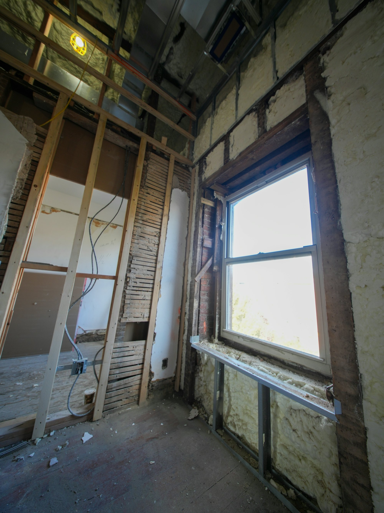

大工工事
床・壁・建具の補修から、間取りの変更まで。

住宅リフォーム 新宿区中落合
2006年創業。東京23区で、自社の職人による住宅リフォームを手がけています。
図の中の場所を押すと、その場所でできる工事の例が出てきます。
例
部分的な小さなリフォームから大がかりなフルリフォームまで、ご要望に柔軟に対応します。
自社の職人が施工するので、打ち合わせでお聞きしたことが、そのまま現場に伝わります。
床・壁・建具の補修から、間取りの変更まで。

キッチン、浴室、トイレ、壁紙や床の張り替え。
使っていない部屋を、在宅ワークのための空間に。
…
| 営業時間 | 8:30〜17:30 |
|---|---|
| 定休日 | 日曜・祝日 |
| 対応エリア | 東京23区 |
「こんなことも頼めるのかな」というご相談も歓迎です。